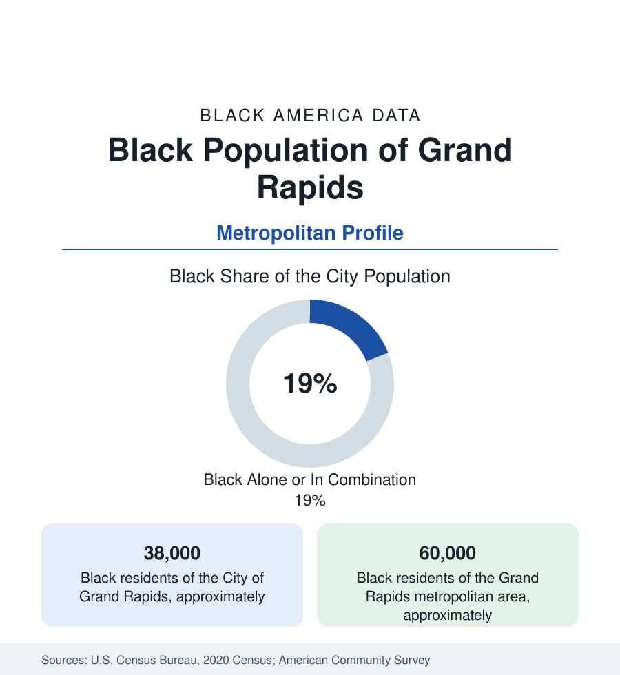

Black Cities
Black Grand Rapids: Furniture City's Southeast Side
Grand Rapids holds about 38,000 Black residents in the city and 60,000 across the metro — West Michigan's largest Black community. The census profile.

Grand Rapids holds about 38,000 Black residents within the city — Black alone or in combination, roughly one resident in five — and about 60,000 across the metropolitan area. West Michigan's dominant city grew on furniture and Dutch Reformed respectability, and its Black community — smaller in share than the state's eastern cities, concentrated on the Southeast Side — built the churches, the Division Avenue corridor, and the civic institutions this profile surveys, in a region whose racial data the national rankings have sometimes flagged for the size of its opportunity gaps relative to its prosperity.
The Southeast Side: Division, Burton Heights, and the Corridor Churches
The geography gathers southeast: the neighborhoods along Division Avenue and Eastern Avenue — Burton Heights, Madison Square, Baxter, Boston Square, the Franklin and Wealthy corridors — where the postwar community concentrated as the furniture jobs and the wartime plants drew Southern migrants up the Illinois and Indiana corridors. The institutional map runs along the church row (True Light, Messiah Missionary Baptist, and the congregations of the Burton and Madison districts), the Grand Rapids African American Museum and Archives (GRAAMA, the community's own record-keeper downtown), and the schools of the southeast — Ottawa Hills and the old South High ground. Wyoming and Kentwood, the southern suburbs, hold the growing edge: Kentwood's school district has become among Michigan's most diverse in the data, its Black and immigrant enrollment the suburban chapter of the metro's redistribution — and Grand Rapids Community College and the downtown medical mile carry the education-employment anchors at the valley's floor.
Furniture, Foundries, and the Medical Mile
The employment data carry the city's two eras: the furniture-and-manufacturing base (Steelcase, Herman Miller's Zeeland plants, Haworth in Holland — the office-furniture triangle that succeeded the wooden-furniture century, its factory workforce the migration's destination; the foundries and auto suppliers of the Wyoming corridor) and the Medical Mile (the Van Andel Institute, Spectrum/Corewell's flagship hospitals, Michigan State's medical school campus — the eds-and-meds complex that rebuilt the downtown valley's employment in the 2000s, its workforce the region's professional tier). Amway's Ada headquarters adds the direct-selling giant's payroll. The indicators are the region's studied paradox: a prosperous, low-unemployment metro whose racial gaps — in income, homeownership, and the childhood poverty files of the southeast ZIP codes — run wider than peer cities in the comparative studies the community's own institutions cite (the 'right place' prosperity with its uneven address). Homeownership in the southeast and Kentwood, poverty in the corridor tracts, and the gentrification file along Division and Wealthy (the corridor plans, the displacement monitoring) complete the current ledger.
The Civic File of the Southeast
The movement and political data run through the Grand Rapids chapters of the NAACP (among Michigan's older branches), the Urban League of West Michigan, and the school-desegregation and busing fights of the late 1960s that the local archive preserves — to the modern record of Black representation in the city commission's Third Ward (the southeast's seat, a standing Black voice in the commission's data) and the county's politics. The cultural ledger adds the Grand Rapids Symphony and the ArtPrize crowds at the region's scale — and, at the community's own scale, the Juneteenth and Black Arts festivals of the southeast corridors and the LINC UP development corporation's neighborhood work (the CDC whose name — Leadership, Innovation, Networking, Community, Uplifting People — is its method) as the institution the current files follow.
Change and the Estimates
The estimates show the metro among Michigan's growth stories — the medical mile and the lakeshore draw compounding — its Black population growing in count, led by Kentwood and Wyoming's suburbs, its city share holding near a fifth. The current files run through the Division corridor's rapid-transit and housing plans, the southeast town-square projects, and the riverfront's next phase — with the opportunity-gap studies' recommendations (the workforce and housing pipelines aimed at the southeast ZIPs) as the policy text the numbers will be judged against.
Reading the Grand Rapids Numbers
Grand Rapids' 60,000 metro Black residents are West Michigan's Black plurality — a fifth of a booming city, holding the southeast's churches and corridors in a region whose prosperity is real and whose gaps are documented in the same studies. The data question here is not growth. It is address: whose streets the prosperity lands on.
More in Black Cities
Black Atlanta: Population, Distribution, and Growth of a Black Metropolis
Metro Atlanta holds more than two million Black residents — roughly one in three, second only to New York. The suburban distribution, migration history, and composition of Black Atlanta in the census data.
Black New York: The Largest Black Population in America
The New York metropolitan area holds about 3.4 million Black residents — more than any metro in the nation — and the city itself about two million. The census profile.
Black Washington: The District and the Metro
The Washington metro holds about 1.6 million Black residents, and the District itself — long a majority-Black city — now records a Black share near 41 percent. The census profile.
Source: U.S. Census Bureau, 2020 Census; American Community Survey; Population Estimates Program.